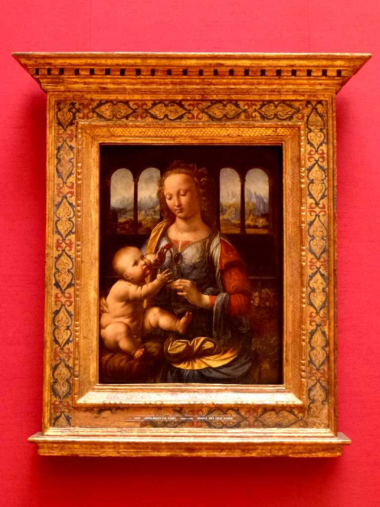
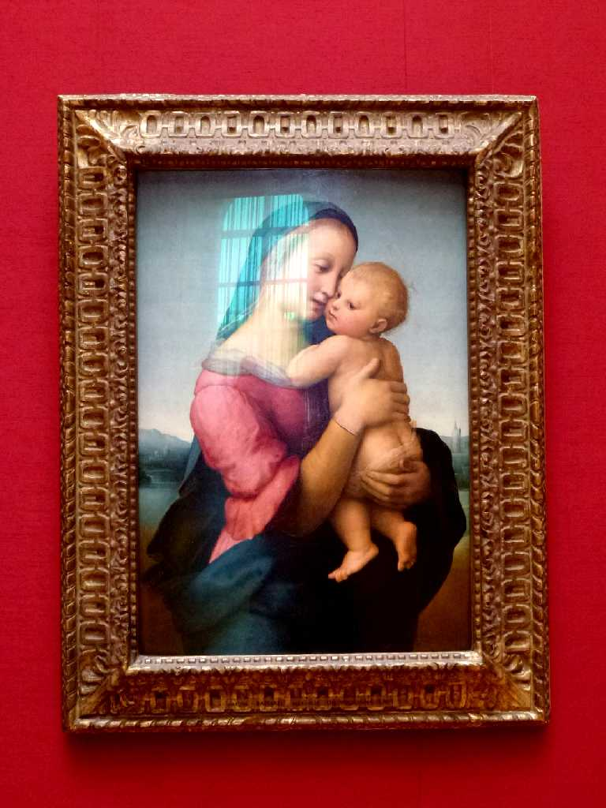
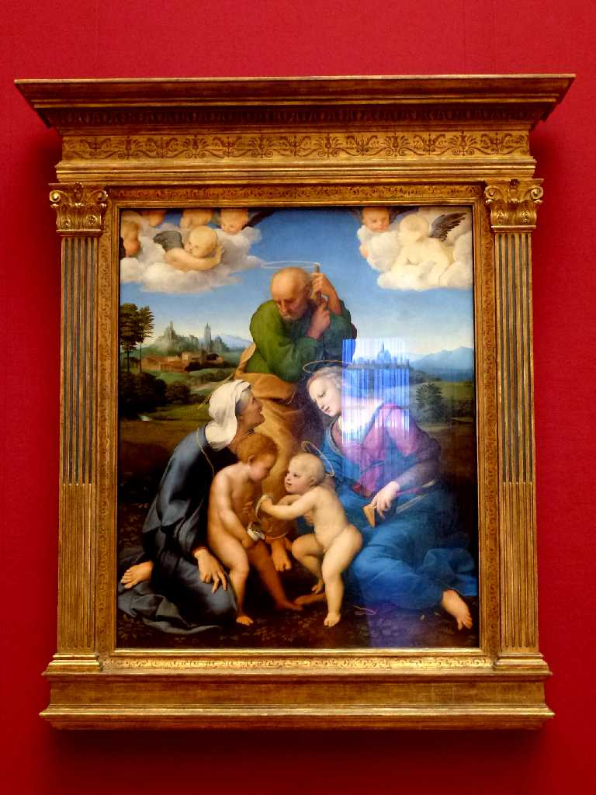
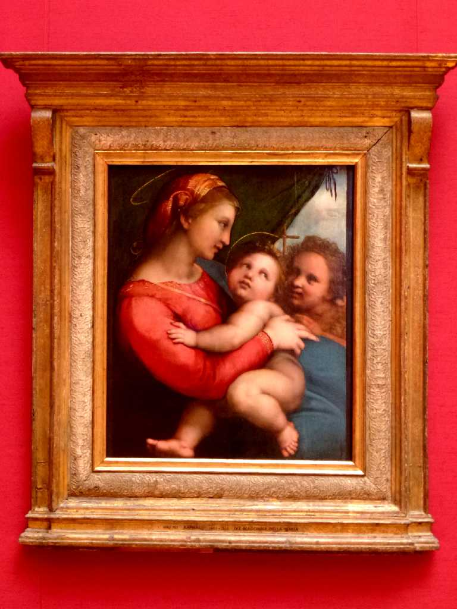
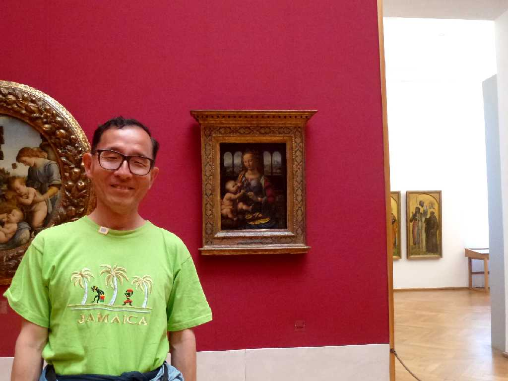

Madonna of the Carnation 1480 Leonardo da Vinci Alte Pinakothek München
レオナルドダヴィンチがベロッキオの工房で描いた初期の作品 カーネーションを持つ聖母

Madonna Tempi 1508 Raffaello Santi
テンピ家のためにラファエロが描いた聖母子
 
Sacra Famiglia Canigiani 1507 Raffaello Santi Madonna della Tenda 1514 Raffaello Santi

July 6 2014 Alte Pinakothek